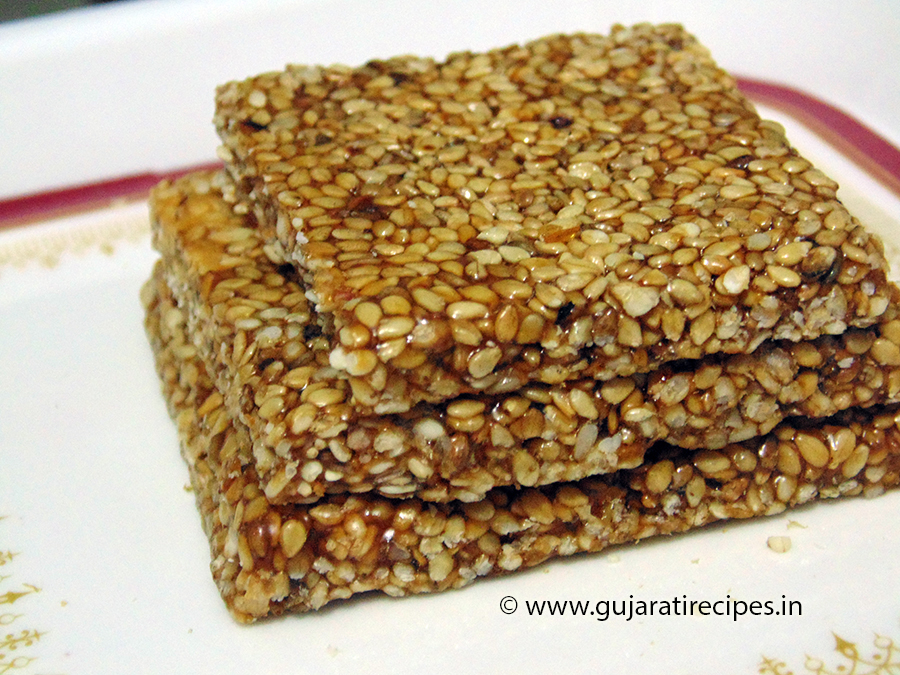

Til Chikki (Sesame Brittle) |
| Rateing |
| prep time:20 minit |
| cook time:20 minit |
| total time:40 minit |
|  |
Ingredients: |
1 Cup Til (sesame seeds)
1.5 cup Jaggery
1.5 tbsp Ghee
|
Instructions: |
| Roast til. Heat ghee in a pan at slow flame. Add jaggery and cook till color change & appears thick Add roasted til in it. Mix well. Remove from flame. Grease platform with ghee. Spread the mixture on it. Roll out like thick roti while it is still hot. When it becomes cool, cut into small pieces. Store in air tied container for 15-20 days. |
video: |